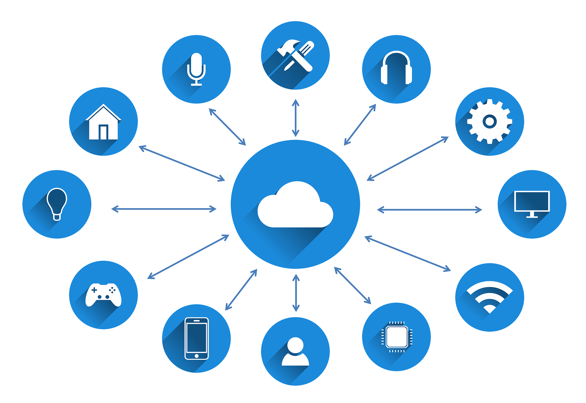

The Internet of Things essentially enables us to connect ‘things’ to the Internet (and to networks that use Internet technology). These things or items can exchange information between them and transmit data to other devices and systems. They can usually also received data. The information they share can be about objects to which they are attached and the environment they are in (through sensors that come in many shapes for different parameters). Smart devices and machines can also share information about their internal state.
 The Internet of Things - online guide to the Internet of Things in context
So, they don’t play games or buy online but capture data, share it and, depending on the precise thing, can act upon data they receive. In other words: physical objects and lots of them, far more than there are people.
The physical things can dispose of embedded technologies enabling them to do all this (hence often called ‘smart’) or can be rather ‘dumb’ as such but get equipped/tagged to be connected. The Internet of Things is a collective term for these connected things, how they communicate and transmit data, the technologies enabling them to do so, and the reasons/goals why this is done.
The Internet of Things - online guide to the Internet of Things in context
So, they don’t play games or buy online but capture data, share it and, depending on the precise thing, can act upon data they receive. In other words: physical objects and lots of them, far more than there are people.
The physical things can dispose of embedded technologies enabling them to do all this (hence often called ‘smart’) or can be rather ‘dumb’ as such but get equipped/tagged to be connected. The Internet of Things is a collective term for these connected things, how they communicate and transmit data, the technologies enabling them to do so, and the reasons/goals why this is done.
 The Internet of Things is the network of physical objects that contain embedded technology to communicate and sense or interact with their internal states or the external environment (Gartner’s definition)
While the Internet of Things starts with the infrastructure of connected things, both its benefits and risks are mainly related to the network technologies, systems, and applications built upon this underlying layer. In theory, anything can be connected to the Internet using IoT technologies: physical objects and living creatures, including animals and people as ‘beings’. All things or connected components of more complex physical objects can be uniquely identified and addressed via the Internet of Things.
Examples of things range from consumer-oriented devices such as wearables and smart home solutions (Consumer IoT) to connected equipment in the enterprise (Enterprise IoT) and industrial assets such as machines, robots, or even workers in smart factories and industrial facilities (Industrial IoT, the essential component of Industry 4.0).
The question is not what you can connect but why you would do so: the purpose, the outcomes. And here is well there are a lot of potential goals which determine what things you want to connect so you can capture data from them (and have sent from, between and/or to them). That’s why often you’ll see distinctions being made between Industrial IoT, Consumer IoT and far more terms which are mentioned in this overview.
So, IoT is an umbrella term with many use cases, technologies, standards and applications.
The Internet of Things is the network of physical objects that contain embedded technology to communicate and sense or interact with their internal states or the external environment (Gartner’s definition)
While the Internet of Things starts with the infrastructure of connected things, both its benefits and risks are mainly related to the network technologies, systems, and applications built upon this underlying layer. In theory, anything can be connected to the Internet using IoT technologies: physical objects and living creatures, including animals and people as ‘beings’. All things or connected components of more complex physical objects can be uniquely identified and addressed via the Internet of Things.
Examples of things range from consumer-oriented devices such as wearables and smart home solutions (Consumer IoT) to connected equipment in the enterprise (Enterprise IoT) and industrial assets such as machines, robots, or even workers in smart factories and industrial facilities (Industrial IoT, the essential component of Industry 4.0).
The question is not what you can connect but why you would do so: the purpose, the outcomes. And here is well there are a lot of potential goals which determine what things you want to connect so you can capture data from them (and have sent from, between and/or to them). That’s why often you’ll see distinctions being made between Industrial IoT, Consumer IoT and far more terms which are mentioned in this overview.
So, IoT is an umbrella term with many use cases, technologies, standards and applications.
Moreover, it’s part of a bigger reality with even more technologies. The things and data are the starting point and essence of what IoT enables and means. IoT devices and assets are equipped with electronics, such as sensors and actuators, connectivity/communication electronics and software to capture, filter and exchange data about themselves, their state and their environment.
The connection of IoT ‘things’ and usage of IoT data enables various improvements and innovations in the lives of consumers, in business, healthcare, mobility, cities and society. The potential goals of IoT are often segmented into IoT use cases: reasons for which IoT is deployed. Examples: health monitoring, asset tracking, environmental monitoring, predictive maintenance and home automation.
There are hundreds of IoT use cases, depending on the industry and/or type of application. Some IoT use cases exist across industries, others are more vertical. An example: asset tracking is a universal use case. It could be a consumer application to know where your pet or skateboard is. But it could also mean tracking containers on a huge cargo ship. Same basic principle, a world of difference regarding technologies and context.
Worldwide spending on the Internet of Things (IoT) is forecast to pass the $1.0 trillion mark in 2022, reaching $1.1 trillion in 2023 (IDC)
IoT is an essential driver for customer-facing innovation, data-driven optimization and automation, digital transformation, R&D and entirely new applications, business models and revenue streams across all sectors. In this IoT business guide you can learn about the origins, technologies and evolutions of IoT with business examples, applications and research.
The Internet of Things is the logical next step in the evolution of the Internet and is a continuation of M2M (machine-to-machine) networks and technologies, building upon and extending technologies in M2M, mobile technologies, RFID and more.
IoT stretches further than these roots while encompassing them and became ever more popular due to several factors, including the lower costs of sensors and enabling technologies and networks.
The Internet of Things converges industries and business areas, uniting Information Technology and Operational Technology (IT and OT) and contributing to industrial transformation (Industry 4.0) and a wave of use cases in the Industrial IoT or IIoT , the largest segment of IoT applications and investments. The main areas of Internet of Things investments (industries and use cases) include manufacturing operations, transportation, smart grid technologies, smart buildings and, increasingly, consumer Internet of Things, smart home automation and retail.ur. To keep up with this crazy pace of development, you have to keep learning the latest technology concepts. We will look at the most trending technologies that you must learnbecome an essential part of the technology industry, helping to solve many challenging problems in computer science, software engineering and operations research.

The Internet of things (IoT) describes the network of physical objects—“things”—that are embedded with sensors, software, and other technologies for the purpose of connecting and exchanging data with other devices and systems over the Internet.
Things have evolved due to the convergence of multiple technologies, real-time analytics, machine learning, commodity sensors, and embedded systems. Traditional fields of embedded systems, wireless sensor networks, control systems, automation (including home and building automation), and others all contribute to enabling the Internet of things.
In the consumer market, IoT technology is most synonymous with products pertaining to the concept of the "smart home300", including devices and appliances (such as lighting fixtures, thermostats, home security systems and cameras, and other home appliances) that support one or more common ecosystems, and can be controlled via devices associated with that ecosystem, such as smartphones and smart speakers. IoT can also be used in healthcare systems.
There are a number of serious concerns about dangers in the growth of IoT, especially in the areas of privacy and security, and consequently industry and governmental moves to address these concerns have begun including the development of international standards.
For Further Information Please visit the article on
Tech Target: Iot Agenda
and on
Erricson